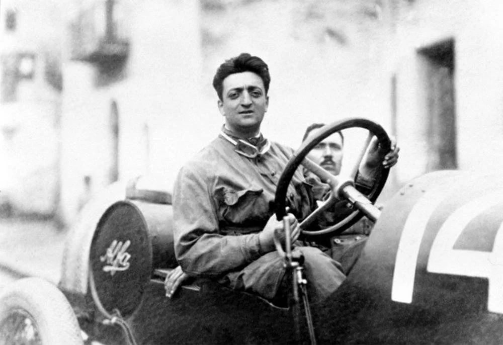
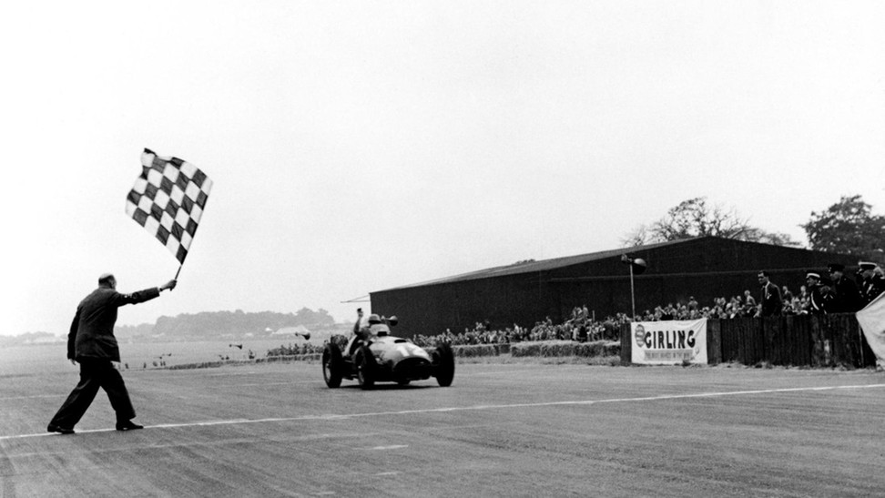
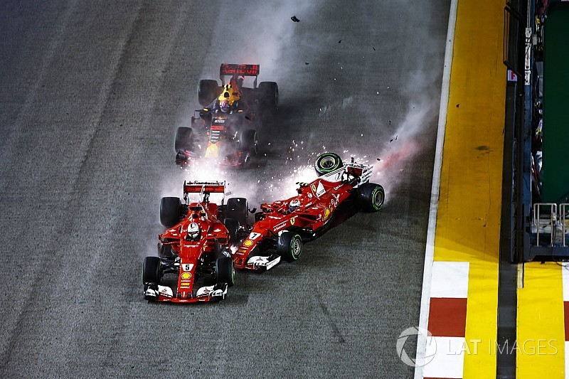
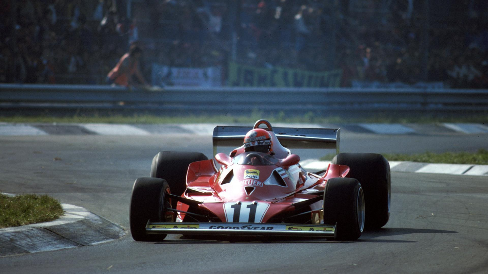

Se pedires a uma criança para desenhar um carro, ela vai desenhar um carro vermelho”, disse Enzo Ferrari, o fundador da mítica construtora de carros desportivos Italiana. Reconhecida como um sinónimo de magnificência e velocidade, a marca do “Cavallino Rampante” obteve uma reputação prestigiosa, quer nas ruas de Maranello, como nas pistas de todo o mundo, desde a sua fundação, em 1939. O legado da escuderia nas diversas categorias do desporto motorizado impulsionou a presença da marca na cultura e história do desporto motorizado.
Na Fórmula 1, a categoria “rainha” do automobilismo, o sucesso da Ferrari destaca-se de todas as restantes equipas que cruzaram a reta da meta ao longo da história da competição: com o maior número de vitórias e campeonatos do mundo (entre outros recordes), a construtora mais antiga do grid entrou, em 2023, na sua 73º temporada consecutiva. São mais de sete décadas de história, triunfos e estatísticas, que acompanham as várias etapas da equipa, desde a sua primeira vitória na Grã-Bretanha em 1951, até ao último campeonato de construtores, conquistado há 15 anos atrás.
Neste artigo, iremos analisar o percurso da Ferrari na Fórmula 1: as suas temporadas, campeonatos do mundo, vitórias, pódios e os pilotos que consolidaram o estatuto da lendária esquadra italiana na maior competição do desporto automóvel.
Até à data, a Ferrari disputou 1059 grandes prémios, alcançando 242 vitórias (22,9%), 799 pódios (75,4%) e 243 pole positions (22,9%). No total, a equipa conta com 16 Campeonatos de Construtores (24,6%) e 15 Campeonatos de Pilotos de Fórmula 1 (20,5%). Pela escuderia passaram uma centena de pilotos, que ao todo disputaram 53 Grandes Prémios em 77 circuitos diferentes, alcançando, pelo menos, uma vitória em 49 dos mesmos (63,6%). Pontuou 865 vezes para o campeonato de pilotos (81,7%) e 813 para o campeonato de construtores (76,8%). Dos 1059 inícios de prova, a equipa sofreu 679 abandonos, 505 corridas com pelo menos um carro sem alcançar a última volta (47,7%), falhou 32 inícios da corrida, viu-se incapaz de se qualificar para 7 grandes prémios e foi desqualificada 9 vezes, em pista.
Na temporada atual de 2023, a Ferrari apresenta-se como a equipa mais antiga e condecorada de todo o pelotão. Logo atrás, a construtora britânica McLaren – com qual a escuderia guarda uma rivalidade histórica – surge como a segunda equipa com maior sucesso na Fórmula 1. Desde a sua fundação em 1966, as 183 vitórias e 494 pódios da equipa sediada em Woking resultaram em 12 campeonatos do mundo de pilotos, juntamente com 8 campeonatos de construtores. Com menos 4 campeonatos de pilotos (9), mas mais um triunfo no campeonato de construtores (9), a Williams pode ser considerada a segunda construtora mais bem-sucedida na Fórmula 1, contando com 114 vitória e 313 pódios.
Apesar dos números históricos da escuderia, os resultados de duas equipas atuais do grid chegam a desafiar e até superar os recordes da Ferrari. Desde a sua reentrada na Fórmula 1 na época de 2010 que a Mercedes entrou nos livros da história da competição, nomeadamente a partir do início da era híbrida em 2014. A formação alemã estabeleceu um recorde de 8 campeonatos de construtores consecutivos (2014-2021), aos quais se juntaram 7 campeonatos em sequência de pilotos entre Lewis Hamilton (2014-2015, 2016-2020) e Nico Roseberg (2016). Num “frente a frente” estatístico com a Ferrari, a Mercedes supera a percentagem de vitórias (44,8%), pódios (67,4%) e pole positions (48,7%) da esquadra italiana, com menos 780 corridas disputadas (279 face a 1059 da Ferrari). Por fim, a atual campeã do mundo, Red Bull, também excede a percentagem de vitórias (28,2%), mas fica atrás da Ferrari na percentagem de pódios (53,8%) e corridas disputadas (355).
A Ferrari estreou-se na Fórmula 1 no Grande Prémio do Mónaco de 1950, na segunda corrida da temporada, com o piloto italiano Alberto Ascari alcançando o segundo lugar – e assim, o primeiro pódio – para a equipa e piloto estreantes. No ano seguinte, o piloto argentino Jose Froilan Gonzalez cruzaria a meta do Grande Prémio da Alemanha em primeiro lugar, conquistando a primeira vitória para a escuderia. Em 1952, com seis vitórias consecutivas, Ascari e a Ferrari ganham o seu primeiro campeonato mundial de pilotos, algo que voltariam a alcançar na temporada seguinte.
Após o sucesso inicial na primeira metade da década de 1950, a equipa italiana voltaria a conquistar o primeiro lugar no campeonato de pilotos, em 1956 e 1958, pelas mãos de Juan Manuel Fangio e Mike Hawthorn, respetivamente. Em 1961, a Ferrari conquista o seu primeiro Campeonato de Construtores, com o piloto norte-americano Phil Hill sangrando-se campeão do mundo, o quinto campeonato de pilotos da equipa. A escuderia voltaria a repetir o mesmo feito em 1964, desta vez com o piloto britânico John Surtees campeão do mundo.
Depois do êxito de Surtees em 1964, seriam precisos mais de 10 anos para ver a Ferrari a conquistar novamente o topo da tabela de ambos os campeonatos de Fórmula 1. Em 1975, o piloto austríaco Niki Lauda levanta o troféu do seu primeiro campeonato do mundo pela equipa, algo que voltaria a fazer em 1977. No período de Lauda, a Ferrari conquistou três campeonatos de construtores consecutivos, consolidando cinco campeonatos de construtores até então.
Ainda na década de 1970, o piloto sul-africano Jody Sheckter sagrou-se campeão do mundo na época de 1979. Juntamente com o canadiense Gilles Villeneuve, a dupla de pilotos alcança o campeonato de construtores, com 6 vitórias e 13 pódios. A equipa de Maranello voltaria a conquistar o campeonato de construtores consecutivamente em 1982 e 1983, algo que só voltaria a alcançar 16 anos mais tarde. Já o título mundial de Sheckter representaria, até 2000, o último campeonato de pilotos alcançado por um piloto da Ferrari em 21 anos.
As décadas de 1980 e 1990 foram particularmente difíceis para a escuderia italiana. As 46 vitórias e 179 pódios alcançados não se traduziram em campeonatos do mundo, com as construtoras britâncias McLaren e Williams dominando as tabelas dos campeonatos de construtores, demonstrando uma capacidade de adaptação superior à evolução tecnológica da Fórmula 1. Durante este período, os pilotos da construtora italiana conseguiram somente alcançar o segundo lugar nos campeonatos de pilotos (1982, 1985, 1990, 1998 e 1999).
Contudo, a Ferrari voltaria a reconhecer os primeiros lugares do pódio com a chegada a Maranello do bicampeão do mundo Michael Schumacher em 1996. Juntamente com o alemão, a Ferrari iria atravessar o seu melhor momento na Fórmula 1 até à data, alcançando cinco campeonatos do mundo de pilotos consecutivos entre 2000 e 2004 e seis campeonatos do mundo de construtores consecutivos, entre 1999 e 2004. Na era de Schumacher, entre 1996 e 2006, juntamente com Eddie Irvine (1996-1999), Rubens Barrichello (2000-2005) e Felipe Massa (2006), a Ferrari somaria 87 vitórias, 207 pódios e 11 campeonatos do mundo (pilotos e construtores).

No decorrer década de 2000, a Ferrari voltaria a somar dois campeonatos de construtores: em 2007, juntamente com o título de campeão de pilotos do finalandes Kimi Raikkonen, e por fim em 2008, o último título da escuderia até à data.
Desde a temporada de 2007 que nenhum piloto da Ferrari voltou a cruzar a reta da meta enquanto campeão do mundo de Fórmula 1. A equipa alcançou o seu último campeonato de construtores na temporada seguinte (2008), mas desde então, uma “perturbadora” falta de resultados tem “assombrado” a escuderia, que não conquistou um único campeonato nas últimas 14 temporadas (2009-2022).
Em 2009, a fraca adaptação às mudanças aerodinâmicas nos carros impostas pela Federação Internacional Automóvel (FIA) traduziu-se num quarto lugar no campeonato de construtores, atrás da rival McLaren. Já nas temporadas de 2010 e 2012, Fernando Alonso foi o único piloto do grid capaz de desafiar as campanhas dominantes da Red Bull e do seu primeiro piloto Sebastian Vettel, mas sem sucesso. Pilotando um carro consideravelmente menos competitivo que o seu rival alemão, o piloto espanhol teve de se contentar com dois vice-campeonatos, com a Ferrari alcançando somente o terceiro e segundo lugar no campeonato de construtores (em 2010 e 2012, respetivamente).
A reintrodução das unidades motorizes híbridas na Fórmula 1 em 2014 voltou a representar uma oportunidade falhada para a Ferrari: a equipa não conseguiu responder à inovação registada pela Mercedes, nomeadamente no desenvolvimento dos novos motores híbridos, com o carro F14T carecendo de potência, aerodinâmica e vitórias. Na temporada de 2015, a Ferrari voltaria a alcançar o segundo lugar no campeonato de construtores, após uma primeira época promissora de Sebastien Vettel, agora no carro encarnado.
Mas a chance do piloto alemão na disputa realística do campeonato do mundo só chegaria dois anos mais tarde, na temporada de 2017. Alcançando duas vitória e 4 pódios nas primeiras cinco corrida da época, tudo indicava que a Ferrari tinha conseguido alcançar ou até mesmo ultrapassar o ritmo da Mercedes de Lewis Hamilton e Valtteri Bottas. Sebastian Vettel liderou o campeonato até à 13ª corrida, o Grande Prémio da Itália, no qual a vitória de Lewis Hamilton sobre ambos os carros da escuderia entregou ao piloto britânico o primeiro lugar na tabela do campeonato de pilotos. Hamilton iria manter e ultimamente ganhar o campeonato de 2017, após um final de temporada da Ferrari marcado por dois abandonos de Vettel, que o atiraria para fora da luta pelo campeonato.
No ano seguinte, Sebastian Vettel voltaria a lutar pelo título de pilotos, inaugurando a época de 2018 com duas vitórias seguidas. O SF71H conseguiu fazer frente ao Mercedes durante a primeira metade da temporada, a qual Vettel chegou a liderar até ao Grande Prémio da Alemanha, quando um acidente forçou o abandono do piloto alemão em casa, cedendo novamente a liderança do campeonato a Hamilton. Tal como em 2017, Hamilton voltaria a ser campeão do mundo na temporada de 2018, com os erros de pilotagem de Vettel e a fraca estratégia em corrida da Ferrari determinando mais um segundo lugar no campeonato de pilotos e de construtores.
Após anos fora da luta direta pelos primeiros lugares e uma das piores campanhas até à data da equipa na temporada de 2020, consolidando o sexto lugar no campeonato de construtores, a chance mais recente de vitória deu-se na época de 2022. Com a reintegração do “efeito solo” aerodinâmico nos carros de Fórmula 1, a equipa italiana demonstrou conseguir adaptar-se a esta nova “filosofia” aerodinâmica, introduzida pela FIA. Charles Leclerc venceu duas das primeiras três corridas da temporada, servindo-se dos abandonamentos iniciais da rival Red Bull de Max Verstappen e Sergio Pérez. No entanto, no decorrer da temporada, vários problemas mecânicos também afetaram a dupla de Leclerc e do seu colega de equipa, Carlos Sainz, que registaram, no total, nove abandonos em corrida durante a temporada. Tal como a Mercedes em 2017 e 2018, a Red Bull conseguiu selar o campeonato de pilotos e de construtores na segunda metade da temporada, alcançando nove vitórias consecutivas frente a uma Ferrari enfraquecida por fraco desenvolvimento do carro, erros de pilotagem e estratégia.
Na temporada atual de 2023, a construtora austríaca continua a estender a sua dominância sobre o pelotão, alcançando oito vitórias consecutivas nas primeiras oito provas da época. Fora da luta pelo título de pilotos e de construtores, a Ferrari conseguiu um pódio e uma pole position, ambas no Grande Prémio de Azerbaijão, com um terceiro lugar de Charles Leclerc, após ter largado em primeiro lugar.
Entre todos os países nos quais a Ferrari disputou um Grande Prémio, a equipa italiana registou em solo alemão o seu maior número de vitórias nos últimos 73 anos. Vencendo 21 das 64 corridas realizadas, a escuderia é historicamente a construtora com o maior número de vitórias em circuitos alemães, alcançando 14 vitórias no circuito de Nurburgring (que acolheu o Grande Prémio da Europa entre 2000 e 2006), 11 no circuito de Hockenheim e uma vitória no circuito de AVUS, na capital de Berlim.
Em Itália, a Ferrari volta a repetir o mesmo recorde. A equipa da casa venceu 19 dos 73 Grandes Prémios concretizados desde 1950, ano da corrida inaugural no circuito do Monza, a “Catedral da Velocidade”, na qual a Ferrari é também a equipa com mais vitórias (19). Já no circuito de Imola, na República de San Marino, a Ferrari venceu 8 vezes, empatando com a Williams entre as construtoras com o maior número de vitórias no microestado.
Alcançando a sua primeira vitória no Grande Prémio da Grã-Bretanha em 1952, ao longo dos anos, a equipa italiana iria registar mais 17 vitórias, tornando-se a construtora com o maior número de vitórias em circuitos britânicos (18). Nas terras de Sua Majestade, a Ferrari conquistou vitórias no circuito de Silverstone (15), Brandes Hatch (2) e Aintree (1).
Também com 18 vitórias, a Ferrari é a equipa mais condecorada na história do Grande Prémio da Bélgica, somando 14 vitórias no circuito de Spa-Francorchamps e 4 no circuito de Zolder. Mesmo ao lado, no Grande Prémio da França, a escuderia soma 17 vitórias entre os circuitos de Magny-Cours (8), Reims (5), Rouen-les-Essarts (2) e Le Castellet (2), fechando a lista dos 5 Grande Prémios onde a Ferrari demonstrou o seu maior sucesso.
Apesar do seu sucesso estatístico, aliado a uma longa lista de conquistas e recordes, a equipa de Maranello nem sempre contou com êxitos frequentes no decorrer da sua campanha na Fórmula 1. Com um começo promissor na década de 1950, alcançando 4 campeonatos de pilotos, foram várias as temporadas em que a equipa italiana não conseguiu garantir quaisquer vitórias (16) ou até pódios, como aconteceu nas épocas de 1973 e 1980.
No mapa de vitórias da Ferrari, conseguimos assinalar o sucesso inicial da marca na sua primeira década na categoria, seguido por um período de relativo êxito nos anos 60. Na segunda metade da década de 1970, a escuderia continuou a estabelecer-se na história do desporto com 4 campeonatos de pilotos. Após 19 anos sem um único campeonato de pilotos, a equipa italiana só voltaria a reconhecer um período de glória no início dos anos 2000.
A dupla de Schumacher e Barrichello alcançou o recorde de vitórias da escuderia por temporada (15) 2 vezes, em 2002 e 2004, juntamente com o maior número de pódios numa só temporada (x). Com 4 títulos de pilotos e 5 títulos de construtores consecutivos, a Ferrari dominou a Fórmula 1 numa forma nunca antes vista até então, solidificando o seu nome no desporto e no coração de fãs em todo o mundo.
Após o seu período de domínio, a Ferrari só iria conhecer um novo campeão mundial pela equipa na temporada de 2007. Apesar de algumas temporadas promissoras, a equipa italiana não conseguiu repetir os feitos da primeira metade da década de 2000, alcançando um número consideravelmente mais baixo de vitórias e pódios na década de 2010. Até à 9º ronda da temporada de 2023, a Ferrari ainda não celebrou vitórias, alcançando um único pódio no GP do Azerbaijão.